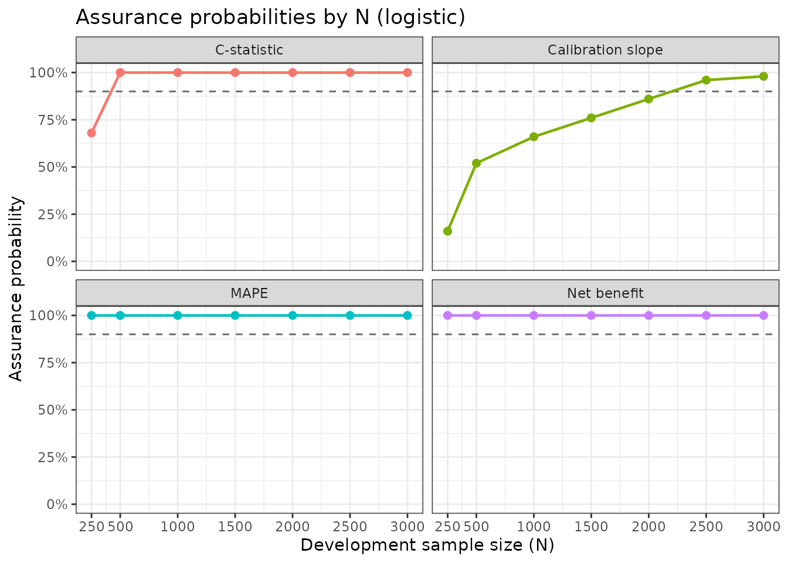
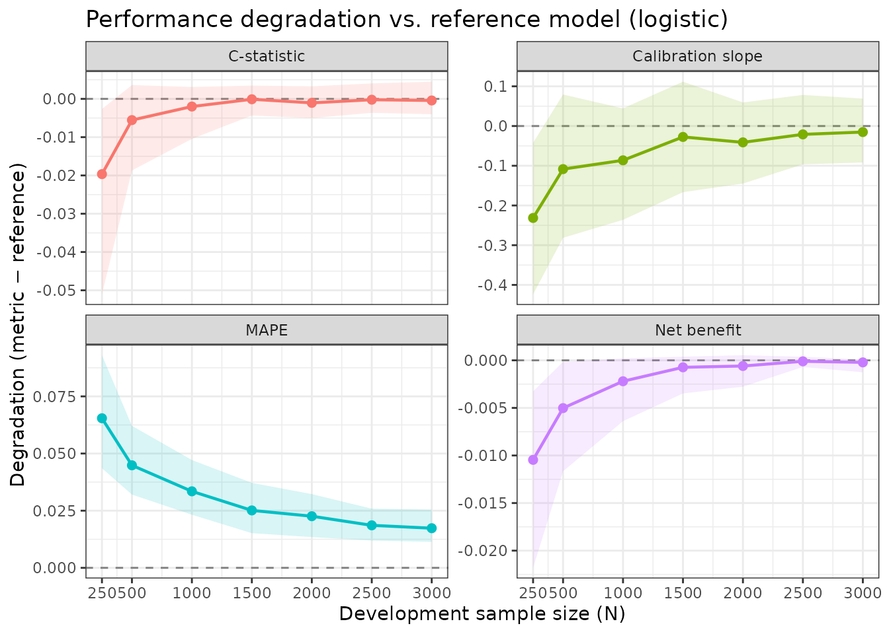
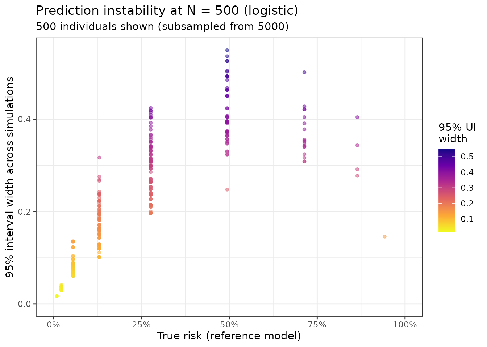
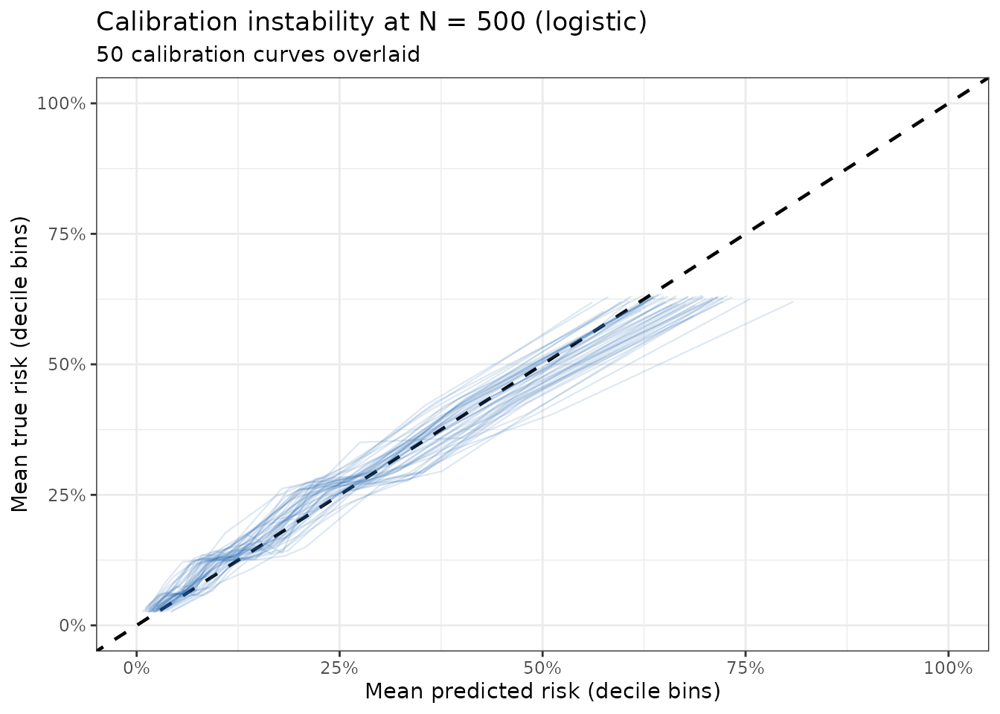

Overview
The pmgen_*() functions implement the general
simulation-based framework for determining sample sizes when developing
clinical prediction models (CPMs) described by Riley et al. (2026).
Unlike the closed-form criteria in pmsampsize(), the
generalised approach works for any supervised learning method and
provides rich summaries of how model performance degrades at different
sample sizes.
This vignette walks through a complete sample size calculation for a binary outcome CPM using the DVT (deep vein thrombosis) dataset. The workflow has four steps:
- Specify a reference model: calibrate a logistic model to your target prevalence and c-statistic using the joint predictor distribution from your data.
- Generate a target population: create a large evaluation dataset from the reference model.
- Run the simulation: repeatedly sample development datasets of varying sizes, fit a model, and evaluate performance against the target population.
- Summarise and plot: identify the minimum sample size meeting your criteria and visualise how performance changes with N.
The DVT Example
We want to develop a logistic regression model to predict DVT
diagnosis from 11 binary clinical predictors. The dataset
(dvt_data) contains 9,805 patients from seven studies and
has a DVT prevalence of approximately 21%. A logistic regression model
on this data achieves an AUC (c-statistic) of about 0.79.
We will use these observed values to specify a reference model, a hypothetical “true” model representing the best achievable performance given the predictor set, and then ask: at what sample size does a newly developed model closely approximate this reference?
library(pmsampsize)
data(dvt_data)
predictors <- c("male", "OCuse", "malignancy", "surgery", "ab_leg_trauma",
"vein_distension", "calf_diff", "ab_ddimer",
"pregnancy", "immobile", "clotting")
cat("Rows:", nrow(dvt_data), "\n")
#> Rows: 9805
cat("DVT prevalence:", round(mean(dvt_data$dvt), 3), "\n")
#> DVT prevalence: 0.209Step 1: Specify the Reference Model
pmgen_reference() calibrates a logistic model to a
target prevalence and c-statistic. We supply dvt_data as
joint_data; this represents the joint distribution of
predictors in the target population, and is used for the bisection
calibration.
We assume equal relative log-odds weights for all 11 predictors
(coef = NULL), a simple default when we do not have prior
knowledge of individual predictor effects. Where the relative sizes of
the effects are known, supply them as coef: the
equal-weights model can give somewhat different results.
ref <- pmgen_reference(
joint_data = dvt_data,
predictors = predictors,
prevalence = 0.21,
cstatistic = 0.78,
tolerance = 0.005,
seed = 42
)
#> Running bisection to calibrate reference model...
#> Bisection converged: prevalence=0.2097 (target=0.2100), c-stat=0.7808 (target=0.7800)
#> Unit information matrix computed and cached.
ref
#> pmgen reference model
#> ---------------------
#> Predictors : male, OCuse, malignancy, surgery, ab_leg_trauma, vein_distension, calf_diff, ab_ddimer, pregnancy, immobile, clotting
#> Intercept : -4.7119
#> Prevalence (achieved): 0.2097
#> C-statistic (achieved): 0.7808
#> Coefficients :
#> male OCuse malignancy surgery ab_leg_trauma
#> 0.9375 0.9375 0.9375 0.9375 0.9375
#> vein_distension calf_diff ab_ddimer pregnancy immobile
#> 0.9375 0.9375 0.9375 0.9375 0.9375
#> clotting
#> 0.9375
#> Unit info matrix : cached (12x12)The ref object contains the calibrated intercept and
scaled coefficients and the achieved prevalence and c-statistic.
Step 2: Generate the Target Population
The target population is a large dataset sampled from the joint
predictor distribution and assigned true risks using the reference
model. All simulated development models are evaluated against this fixed
population, so performance estimates are comparable across simulation
iterations. The rows of joint_data not used for the target
population form the development pool from which development datasets are
drawn, so n must be smaller than
nrow(joint_data). In practice use as large a target
population as the data allow (e.g. 100,000 when joint_data
is large or synthetic).
target_pop <- pmgen_target_population(
ref_model = ref,
n = 5000,
seed = 42
)
cat("Target population: n =", nrow(target_pop$data), "\n")
#> Target population: n = 5000
cat("Development pool: n =", nrow(target_pop$dev_pool), "\n")
#> Development pool: n = 4805
cat("True risk range:", round(range(target_pop$data$p_true), 3), "\n")
#> True risk range: 0.009 0.976
cat("Simulated prevalence:", round(mean(target_pop$data$outcome), 3), "\n")
#> Simulated prevalence: 0.208Step 3: Run the Simulation
pmgen_simulate() is the core function. For each value of
N in the N vector, it:
- Samples a development dataset of size N (with replacement from the development pool).
- Simulates binary outcomes using the reference model’s true risks.
- Fits the chosen model on the development data.
- Predicts on the target population.
- Computes all requested performance metrics.
This repeats n_sims times (default 1,000). Here we use
n_sims = 50 so the vignette builds quickly; use at least
500 to 1,000 in practice.
We evaluate logistic regression across a range of sample sizes.
result <- pmgen_simulate(
ref_model = ref,
target_pop = target_pop,
N = c(250, 500, 1000, 1500, 2000, 2500, 3000),
n_sims = n_sims_vignette,
method = "logistic",
metrics = c("cstat", "cal_slope", "mape", "net_benefit"),
threshold = 0.2, # clinical decision threshold for net benefit
store_predictions = TRUE,
seed = 42,
verbose = FALSE
)
result
#> pmgen result
#> ------------
#> Method : logistic
#> N values : 250, 500, 1000, 1500, 2000, 2500, 3000
#> Metrics : cstat, cal_slope, mape, net_benefit
#> Draws/N : 50
#> Predictions stored : yes
#> Perfect prediction : fits with predictors dropped
#> N = 250: 3/50 (OCuse 1, ab_leg_trauma 2)
#>
#> Summary (means across simulations):
#> N metric mean sd q025 q975
#> 250 cstat 0.77152667 0.0135627685 0.74012928 0.78853659
#> 250 cal_slope 0.78078664 0.1078134490 0.58848037 0.96992815
#> 250 mape 0.06542969 0.0135435345 0.04356957 0.09300101
#> 250 net_benefit 0.08519100 0.0051986820 0.07384250 0.09238875
#> 500 cstat 0.78563988 0.0058709288 0.77248272 0.79478783
#> 500 cal_slope 0.90376577 0.1029239820 0.73080343 1.09160101
#> 500 mape 0.04484582 0.0084909867 0.03205256 0.06211988
#> 500 net_benefit 0.09063000 0.0032011159 0.08399125 0.09548750
#> 1000 cstat 0.78918144 0.0034978413 0.78073911 0.79429331
#> 1000 cal_slope 0.92589984 0.0807129822 0.77602050 1.05667303
#> 1000 mape 0.03346984 0.0071702731 0.02322919 0.04715885
#> 1000 net_benefit 0.09345200 0.0017484676 0.08925625 0.09585375
#> 1500 cstat 0.79107965 0.0022409175 0.78683923 0.79465708
#> 1500 cal_slope 0.98477179 0.0762874526 0.84566338 1.12382643
#> 1500 mape 0.02511734 0.0058529178 0.01516533 0.03717574
#> 1500 net_benefit 0.09491700 0.0010782455 0.09217250 0.09603875
#> 2000 cstat 0.79014095 0.0024544764 0.78615345 0.79447192
#> 2000 cal_slope 0.97112516 0.0553089194 0.86740134 1.07163210
#> 2000 mape 0.02258441 0.0050311409 0.01344742 0.03225466
#> 2000 net_benefit 0.09505300 0.0008705739 0.09287875 0.09618750
#> 2500 cstat 0.79095921 0.0021452362 0.78754241 0.79521947
#> 2500 cal_slope 0.99120338 0.0484123681 0.91577962 1.09053785
#> 2500 mape 0.01858891 0.0038321705 0.01193149 0.02587938
#> 2500 net_benefit 0.09554800 0.0002948469 0.09495000 0.09602750
#> 3000 cstat 0.79076518 0.0022581377 0.78717040 0.79566550
#> 3000 cal_slope 0.99706630 0.0470520484 0.92046170 1.08134394
#> 3000 mape 0.01733641 0.0039533199 0.01137116 0.02548496
#> 3000 net_benefit 0.09543500 0.0003801517 0.09439500 0.09573875
#> degradation_mean
#> -0.0196552269
#> -0.2314341509
#> 0.0654296900
#> -0.0104590000
#> -0.0055420219
#> -0.1084550260
#> 0.0448458228
#> -0.0050200000
#> -0.0020004615
#> -0.0863209472
#> 0.0334698370
#> -0.0021980000
#> -0.0001022537
#> -0.0274489986
#> 0.0251173437
#> -0.0007330000
#> -0.0010409483
#> -0.0410956265
#> 0.0225844144
#> -0.0005970000
#> -0.0002226908
#> -0.0210174111
#> 0.0185889098
#> -0.0001020000
#> -0.0004167161
#> -0.0151544951
#> 0.0173364054
#> -0.0002150000Penalised methods are also built in: method = "ridge",
"lasso" or "elasticnet" (these need the glmnet
package) and "firth" (needs logistf). You can also supply
your own fitting function; see ?pmgen_simulate.
Parallelisation
If the furrr package is installed, pmgen_simulate() runs
its simulations with furrr::future_map(), so it respects
whatever future plan is active. On a multicore machine you
can cut runtime roughly in proportion to the number of cores by setting
a parallel plan before the call. Without furrr, or without a parallel
plan, the simulations run sequentially.
Shared-memory parallelism (single machine)
library(future)
# Use all available cores (or set workers = N for a specific number)
plan(multisession)
result_par <- pmgen_simulate(
ref_model = ref,
target_pop = target_pop,
N = c(250, 500, 1000, 1500, 2000, 2500, 3000),
n_sims = 1000,
method = "logistic",
metrics = c("cstat", "cal_slope", "mape", "net_benefit"),
threshold = 0.2,
seed = 42,
verbose = FALSE
)
# Always restore sequential execution when done
plan(sequential)Parallelism is across simulation draws within each N value. With
n_sims = 1000 and 4 cores, wall time is approximately 4
times faster than sequential.
Limiting the number of workers
plan(multisession, workers = 4) # cap at 4 cores regardless of machine size
result_par <- pmgen_simulate(
ref_model = ref,
target_pop = target_pop,
N = c(250, 500, 1000, 1500, 2000, 2500, 3000),
n_sims = 1000,
method = "logistic",
seed = 42,
verbose = FALSE
)
plan(sequential)Reproducibility under parallelism
Each simulation sets its own seed, computed before the parallel loop
from seed, the value of N and n_sims. The same
seed therefore gives identical results whether you run
sequentially or in parallel, with any number of workers:
plan(sequential)
result_seq <- pmgen_simulate(ref, target_pop, N = c(200, 500), n_sims = 50,
method = "logistic", seed = 1)
plan(multisession, workers = 2)
result_par <- pmgen_simulate(ref, target_pop, N = c(200, 500), n_sims = 50,
method = "logistic", seed = 1)
plan(sequential)
# Summaries are identical
all.equal(summary(result_seq), summary(result_par))Because an N value’s seeds do not depend on the other values in
N, a grid can be extended later:
N = c(500, 800) with seed = 1 gives the same
results for N = 500 as above. Likewise, increasing n_sims
keeps the earlier simulations and adds new ones.
Choosing the right number of workers
| Scenario | Recommendation |
|---|---|
| Interactive session, quick exploration |
plan(sequential): no overhead |
Final analysis, n_sims of 500 or more, single
machine |
plan(multisession) (all cores) |
| Large grid of N values, HPC cluster |
plan(cluster): see ?future::cluster
|
| Memory-constrained machine | plan(multisession, workers = 2) |
Each worker loads a copy of target_pop and
ref_model into memory. For a target_pop of
50,000 rows and 11 predictors this is modest (~10 MB per worker); for
500,000 rows consider capping workers to avoid memory pressure.
Step 4: Summarise Results
summary() produces a table of performance summaries for
each N, matching the structure reported in Riley et al. (2026). For each
metric it shows the mean, standard deviation, 2.5th and 97.5th
percentiles, and the mean degradation versus the reference model.
summary(result)
#> N metric mean sd q025 q975
#> 1 250 cstat 0.77152667 0.0135627685 0.74012928 0.78853659
#> 2 250 cal_slope 0.78078664 0.1078134490 0.58848037 0.96992815
#> 3 250 mape 0.06542969 0.0135435345 0.04356957 0.09300101
#> 4 250 net_benefit 0.08519100 0.0051986820 0.07384250 0.09238875
#> 5 500 cstat 0.78563988 0.0058709288 0.77248272 0.79478783
#> 6 500 cal_slope 0.90376577 0.1029239820 0.73080343 1.09160101
#> 7 500 mape 0.04484582 0.0084909867 0.03205256 0.06211988
#> 8 500 net_benefit 0.09063000 0.0032011159 0.08399125 0.09548750
#> 9 1000 cstat 0.78918144 0.0034978413 0.78073911 0.79429331
#> 10 1000 cal_slope 0.92589984 0.0807129822 0.77602050 1.05667303
#> 11 1000 mape 0.03346984 0.0071702731 0.02322919 0.04715885
#> 12 1000 net_benefit 0.09345200 0.0017484676 0.08925625 0.09585375
#> 13 1500 cstat 0.79107965 0.0022409175 0.78683923 0.79465708
#> 14 1500 cal_slope 0.98477179 0.0762874526 0.84566338 1.12382643
#> 15 1500 mape 0.02511734 0.0058529178 0.01516533 0.03717574
#> 16 1500 net_benefit 0.09491700 0.0010782455 0.09217250 0.09603875
#> 17 2000 cstat 0.79014095 0.0024544764 0.78615345 0.79447192
#> 18 2000 cal_slope 0.97112516 0.0553089194 0.86740134 1.07163210
#> 19 2000 mape 0.02258441 0.0050311409 0.01344742 0.03225466
#> 20 2000 net_benefit 0.09505300 0.0008705739 0.09287875 0.09618750
#> 21 2500 cstat 0.79095921 0.0021452362 0.78754241 0.79521947
#> 22 2500 cal_slope 0.99120338 0.0484123681 0.91577962 1.09053785
#> 23 2500 mape 0.01858891 0.0038321705 0.01193149 0.02587938
#> 24 2500 net_benefit 0.09554800 0.0002948469 0.09495000 0.09602750
#> 25 3000 cstat 0.79076518 0.0022581377 0.78717040 0.79566550
#> 26 3000 cal_slope 0.99706630 0.0470520484 0.92046170 1.08134394
#> 27 3000 mape 0.01733641 0.0039533199 0.01137116 0.02548496
#> 28 3000 net_benefit 0.09543500 0.0003801517 0.09439500 0.09573875
#> degradation_mean
#> 1 -0.0196552269
#> 2 -0.2314341509
#> 3 0.0654296900
#> 4 -0.0104590000
#> 5 -0.0055420219
#> 6 -0.1084550260
#> 7 0.0448458228
#> 8 -0.0050200000
#> 9 -0.0020004615
#> 10 -0.0863209472
#> 11 0.0334698370
#> 12 -0.0021980000
#> 13 -0.0001022537
#> 14 -0.0274489986
#> 15 0.0251173437
#> 16 -0.0007330000
#> 17 -0.0010409483
#> 18 -0.0410956265
#> 19 0.0225844144
#> 20 -0.0005970000
#> 21 -0.0002226908
#> 22 -0.0210174111
#> 23 0.0185889098
#> 24 -0.0001020000
#> 25 -0.0004167161
#> 26 -0.0151544951
#> 27 0.0173364054
#> 28 -0.0002150000Step 5: Find the Minimum Sample Size
pmgen_min_n() scans across N values and reports the
minimum N at which all specified criteria are met. The criteria below
follow the guidance in Riley et al. (2026). (With the small
n_sims used to build this vignette the result is noisy; use
1000 or more in practice.)
- Calibration slope: P(0.9 <= slope <= 1.1) >= 0.90
- C-statistic degradation: mean degradation vs. reference <= 0.025
- MAPE: mean absolute prediction error <= 0.05
pmgen_min_n(
result,
criteria = list(
cal_slope = list(range = c(0.9, 1.1), min_prob = 0.90),
cstat = list(max_abs_deg_mean = 0.025),
mape = list(max_mean = 0.05)
)
)
#> pmgen minimum sample size
#> -------------------------
#> Minimum N : 2500
#>
#> Criterion compliance by N:
#> N cal_slope cstat mape all_met
#> 250 no YES no no
#> 500 no YES YES no
#> 1000 no YES YES no
#> 1500 no YES YES no
#> 2000 no YES YES no
#> 2500 YES YES YES YES
#> 3000 YES YES YES YESVisualisation
The plots need the ggplot2 and scales packages.
Assurance curves
The assurance plot shows, for each metric criterion, how the probability of meeting that criterion changes with N. The recommended minimum N is where the curve crosses the 0.9 threshold.
plot(result, type = "assurance")
Degradation curves
The degradation plot shows mean performance (and 95% simulation range) vs. N for each metric, relative to the reference model.
plot(result, type = "degradation")
Prediction instability
The instability plot illustrates how individual-level predicted risks vary across the simulation draws at a given N. Each point is one target-population individual; the vertical axis shows the width of their 95% interval of predicted risks.
plot(result, type = "instability", N = 500)
Calibration instability
The calibration instability plot overlays calibration curves from a sample of the simulation draws, showing the “fan” of uncertainty that shrinks as N grows.
plot(result, type = "calibration", N = 500)
No Data? Using Distributional Assumptions
If you do not have pilot data, you can specify marginal predictor distributions directly:
ref_nodta <- pmgen_reference(
joint_data = list(
x1 = list(dist = "bernoulli", prob = 0.45), # e.g., male sex
x2 = list(dist = "bernoulli", prob = 0.20), # e.g., malignancy
x3 = list(dist = "bernoulli", prob = 0.30) # etc.
# ... specify all 11 predictors
),
prevalence = 0.21,
cstatistic = 0.78,
n_synth = 500000,
seed = 42
)This assumes all predictors are independent. The article “Specifying Distributional Assumptions (No Pilot Data)” on the package website gives guidance on when this is appropriate and how sensitive results are to the independence assumption.
Reference
Riley RD, Whittle R, Sadatsafavi M, Martin GP, Pate A, Collins GS, Ensor J. A general sample size framework for developing or updating a predictive algorithm: with application to clinical prediction models. BMC Medical Research Methodology. 2026;26:121. https://doi.org/10.1186/s12874-026-02856-7